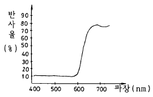
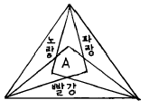
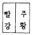
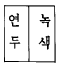
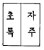
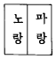
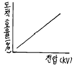
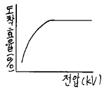
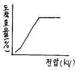
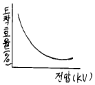

금속도장기능사 (2001-10-14 기출문제)
1과목: 색채
1. 팽창, 진출되어 보이는 색은?
- 파랑, 남색
- 연두, 녹색
- 빨강, 주황
- 흰색, 회색
(정답률: 알수없음)

2. 흰색과 빨강색의 대비현상에서 볼 수 없는 대비 현상은?
- 명도대비
- 채도대비
- 색상대비
- 보색대비
(정답률: 알수없음)
3. 일반적인 색채조화의 요건이 아닌 것은?
- 색상의 가짓수를 많이 늘린다.
- 색을 크게 그룹으로 나눈다.
- 전체에 공통적인 부분으로 통일시킨다.
- 주제와 배경과의 대비를 생각한다.
(정답률: 알수없음)
4. 색상환에서 가장 먼 쪽에 있는 색의 관계를 무엇이라 하는가?
- 청색
- 탁색
- 보색
- 대비
(정답률: 알수없음)
5. 다음 그림과 같은 파장별 반사율 곡선이 나타내는 색은?

- 노랑
- 파랑
- 빨강
- 녹색
(정답률: 알수없음)
6. 명도란 색의 어떤 성질을 말하는가?
- 빛깔
- 선명도
- 밝기
- 색상
(정답률: 알수없음)
7. 중간 혼합과 관계 깊은 것은?
- 가산혼합
- 병치혼합
- 감산혼합
- 색광혼합
(정답률: 알수없음)
8. 다음 그림은 물감의 혼색, 또는 색유리를 겹쳐 혼색한 것이다. A부분을 바르게 설명한 것은?

- 색의 3요소가 모두 있는 색이다.
- 색의 3요소중 색상만 있는 것이다.
- 색의 3요소중 채도만 있는 것이다.
- 색의 3요소중 명도만 있는 것이다.
(정답률: 알수없음)
9. 빨간색 옆에 놓여진 연두색과 파랑색 옆에 놓여진 같은 연두색의 실험에서 얻을 수 있는 색의 대비 현상은?
- 명도대비
- 면적대비
- 한란대비
- 연변대비
(정답률: 알수없음)
10. 조건등색(metamerism)에 관한 설명 중 옳은 것은?
- 동일한 색이 특수한 조명 아래에서 다른 색으로 보이는 현상
- 다른 두색이 특수한 조명 아래에서 같은 색으로 보이는 현상
- 동일한 색이 조명에 따라서 여러가지 색으로 보이는 현상
- 특수한 색이 특수한 조명아래에서 색을 띠지 않는 현상
(정답률: 알수없음)
11. 색의 경연감은 굳게 또는 부드럽게 느껴지는 일련의 색감정을 의미한다. 다음 설명 중 잘못된 것은?
- 채도가 낮고 명도가 높은 색은 대체로 부드러워 보인다.
- 중명도의 색은 대체로 부드러워 보인다.
- 차가운 느낌의 색은 부드러워 보인다.
- 분홍색, 살색, 연두색 등에 흰색을 섞으면 부드러운 느낌을 준다.
(정답률: 알수없음)
12. 다음 배색 중 가장 화려한 느낌이 나는 것은?




(정답률: 알수없음)
13. 2액형 폴리우레탄수지 도료에서 도장후 열처리 시간과 온도가 맞는 것은?
- 80℃에서 30분간
- 100℃에서 60분간
- 120℃에서 60분간
- 100℃에서 30분간
(정답률: 알수없음)
14. 니트로 셀룰로오스 래커도장시 습도가 높으면 백화 현상이 발생한다. 이것을 방지하기 위하여 혼합용제로 리타더신너(RETADER THINNER)를 사용한다. 이 신너의 주성분(함량이 많은 것)은?
- 폴리에스테르
- 에틸 아세테이트
- 톨루엔
- 셀로솔브
(정답률: 알수없음)
15. 철강면의 유지류를 제거할 때 트리클로로에틸렌을 주로 사용하는 탈지법은?
- 용제증기 탈지
- 알칼리 탈지
- 전해 알칼리 탈지
- 에멀션 탈지
(정답률: 알수없음)
16. 인산염 속에는 어떤 성분이 혼합되지 않는가?
- 인산망간
- 인산아연
- 인산철
- 크롬산
(정답률: 알수없음)
17. 방청도료 중 표면처리적 도료이기 때문에 녹막이 효과는 크게 기대하지 못하는 것은?
- 아연말 도료
- 에칭 프라이머(워시프라이머)
- 광명단 도료
- 징크크로메이트 도료
(정답률: 알수없음)
18. 에칭 프라이머(etching primer)의 주용도는?
- 금속의 방식처리를 하기 위한 방법으로서 일종의 바닥칠용 도료이다.
- 목조건축의 화재를 방지하기 위한 도료이다.
- 내약품성 도료이다.
- 보호 및 미장을 목적으로 하는 도료이다.
(정답률: 알수없음)
19. 내열성이 제일 좋은 도료는?
- 프탈산 수지도료
- 열경화성 아크릴 수지도료
- 실리콘 수지도료
- 멜라민 수지도료
(정답률: 알수없음)
20. 광명단 프라이머에 관한 내용 중 잘못된 것은?
- 주성분은 Pb3O4이다.
- 주로 알루미늄 프라이머로 사용된다.
- 철강용 프라이머로 사용된다.
- 95% Pb3O4는 보일유와 반죽해 두어도 응고되지 않는다.
(정답률: 알수없음)
2과목: 금속도장재료
21. 도장을 할 때 수분의 영향을 받아 도막의 표면이 광택을 잃고 퇴색하기 쉬운 도료는?
- 조합페인트
- 래커에나멜
- 에나멜페인트
- 알키드바니스
(정답률: 알수없음)
22. 아연과 그 합금의 산세에 대한 설명으로 적당한 것은?
- 2-3%의 염산 용액으로 처리한다.
- 10%의 황산 용액으로 처리한다.
- 10-20%의 염산 용액으로 처리한다.
- 35-50%의 초산 용액으로 처리한다.
(정답률: 알수없음)
23. 광택제의 조건과 관계 없는 것은?
- 불순물에 예민할 것
- 평활성이 클 것
- 전류밀도의 범위가 넓을 것
- 물체에 균일광택이 이루어질 것
(정답률: 알수없음)
24. 인산염 피막의 특징이다. 옳지 않은 것은?
- 인산철의 피막 결정은 비결정이다.
- 인산아연 피막 결정은 흑회색의 결정 피막이다.
- 인산아연 칼슘 피막 결정은 비결정이다.
- 인산아연 칼슘 피막 결정은 내식성은 나쁘나 작업성은 우수하다.
(정답률: 알수없음)
25. 케톤계의 용제가 아닌 것은?
- 아세톤
- 톨루엔
- 메틸에틸케톤(MEK)
- 메틸이소부틸케톤(MIBK)
(정답률: 알수없음)
26. 다음은 상도도료에 대한 설명이다. 옳지 않은 것은?
- 조합페인트는 보일유나 용제로 점도 조정을 한다.
- 유성도료는 평활성이 좋다.
- 알키드 수지계 도료보다 유성계 도료의 건조가 빠르다.
- 래커계 도료는 살붙임성이 나쁘다.
(정답률: 알수없음)
27. 다음은 리무버를 사용한 구도막 박리작업의 설명이다. 옳지 않은 것은?
- 좁은면의 박리작업보다는 넓은 부위의 구도막을 벗겨낼 때 사용한다.
- 바닥에 흘리지 않도록 하고 도포 후 15~20분간 방치한다.
- 리무버에 의해 부풀어 오르면 스크레이퍼로 철판이 손상가지 않도록 주의하며 벗겨 낸다.
- 신차도막이 보수도막 보다 리무버에 쉽게 벗겨진다.
(정답률: 알수없음)
28. 다음은 안료의 특성을 나열한 것이다. 맞는 것은?
- 안료는 물에는 녹지 않지만 기름, 용제에는 녹는다.
- 안료는 물, 기름, 용제 등에 녹는 미세한 분말이다.
- 안료는 물, 기름, 용제 등에 녹지 않는 착색된 미세한 분말이다.
- 안료는 기름, 용제에는 녹지 않지만 물에는 녹는다.
(정답률: 알수없음)
29. 다음 중 금속의 일반적인 성질 중 장점이 아닌 것은?
- 열전도도가 좋다.
- 전기 전도도가 좋다.
- 외력에 대한 저항이 크고 연성 및 전성이 크다.
- 비중이 크다.
(정답률: 알수없음)
30. 다음 중 저비점 용제가 아닌 것은?
- 아세톤
- 메탄올
- 톨루엔
- 에틸에테르
(정답률: 알수없음)
31. 자연건조형 도료에서 핀홀(pinhole) 결함과 관계가 없는 것은?
- 피도물과 외기 온도와의 차가 심할 때
- 고온 다습 할 때
- 증발 속도가 늦은 신너를 사용하였을 때
- 셋팅 시간이 짧고 가열 온도가 급상승할 때
(정답률: 알수없음)
32. 금속 도장작업에 대한 설명 중 잘못된 것은?
- 금속 도장은 거친면에 효과가 있다.
- 철강면의 바탕 조정에서 대표적 불순물은 유지이다.
- 녹의 제거는 물리적, 화학적 방법이 있다.
- 산세법은 녹을 제거하는 한가지 방법이다.
(정답률: 알수없음)
33. 산으로 녹제거 작업을 할 때 주의해야 할 점이 아닌 것은?
- 중화를 철저히 해야 한다.
- 수소가스 발생으로 고강도 강철은 수소취성이 생기므로 주의한다.
- O2가스 발생으로 거품이 많이 생기지 않도록 주의한다.
- 탈지를 먼저한 뒤 산으로 녹을 제거한다.
(정답률: 알수없음)
34. 서페이서를 도포하는 목적과 직접적인 관계가 없는 것은?
- 도막의 내후성을 강화하기 위하여
- 도면의 평활도를 조정하기 위하여
- 외적 충격에서 하지를 보호하기 위하여
- 상도 도료의 용제 침투를 막기 위하여
(정답률: 알수없음)
35. 나무 주걱의 설명으로 잘못된 것은?
- 다듬어진 주걱은 허리가 적당히 휘어져야 한다.
- 주걱 끝이 갈라지는 성질이 없어야 한다.
- 용제나 물에 장시간 견딜 수 있어야 한다.
- 큰 요철은 없애기 쉬우나 작은 요철이나 사포 자국은 없애기 힘들다.
(정답률: 알수없음)
36. 다음 중 금속도장 전처리의 일반적인 목적이라고 볼 수 없는 것은?
- 금속의 내식성 향상
- 도막의 밀착성 향상
- 금속표면의 조면화(粗面化)
- 도막 및 금속의 경도 증가
(정답률: 알수없음)
37. 일반적인 부스의 형태가 아닌 것은?
- 건식 부스
- 수세식 부스
- 정전 부스
- 기름 부스
(정답률: 알수없음)
38. 에어리스 도장에 관한 사항 중 옳은 것은?
- 플렌저 펌프가 작동하여도 도료압이 오르지 않는 것은 에어 필터와 관계가 없다.
- 공기압을 증가시키면 도료의 분출량은 올라간다.
- 플렌저 펌프의 작동은 공기의 이송과 무관하다.
- 스프레이건의 도료 분출량은 플렌저 펌프 교환으로 행해진다.
(정답률: 알수없음)
39. 스프레이 건의 내부 혼합형에 대한 설명이 아닌 것은?
- 도료는 압송식으로 공급한다.
- 고점도 도료도 사용할 수 있다.
- 공기캡의 내측에서 도료와 공기를 혼합한다.
- 패턴은 둥근형과 평형이 있다.
(정답률: 알수없음)
40. 스프레이 건 분무 도장시 한쪽으로 굽는 활꼴 패턴의 원인과 관계가 없는 것은?
- 노즐의 한편에 먼지가 끼어 있다.
- 도료의 점도가 낮다.
- 캡의 모서리 부분에 공기 구멍의 한쪽이 막혀 있다.
- 캡과 노즐이 접촉하는 곳에 먼지가 끼어 있다.
(정답률: 알수없음)
3과목: 금속도장
41. 래커나 비닐계 또는 멜라민계 도료를 사용하는 호트 스프레이 작업은 보통 몇도까지 가온하여 사용하는가?
- 30-40℃
- 41-50℃
- 51-60℃
- 70-75℃
(정답률: 알수없음)
42. 분체 도장법과 거리가 먼 것은?
- 정전(靜電) 분무식
- 유동 침적식
- 정전 유동 침적식
- 영동 전착식
(정답률: 알수없음)
43. 정전 도장시 전압과 도착효율과의 관계를 나타낸 그래프 중 옳은 것은?




(정답률: 알수없음)
44. 오렌지 필(orange peel)결함과 관계가 없는 것은?
- 스프레이건을 피도면에 지나치게 멀리 할 때
- 용제가 적당하지 못할 때
- 하도의 흡수가 심할 때
- 하도의 건조가 불충분 할 때
(정답률: 알수없음)
45. 도료 보관상 주의사항과 관계가 먼 것은?
- 환기가 잘 되는 곳에서 보관한다.
- 직사광선을 피한 곳에서 보관한다.
- 비교적 따뜻한 곳에서 보관한다.
- 스파크가 일어나지 않는 곳에서 보관한다.
(정답률: 알수없음)
46. 도장작업 중 중독자에 대한 처치사항이 아닌 것은?
- 통풍이 잘 되는 곳에 안정시킨다.
- 의복을 갈아 입힌다.
- 체온의 보온에 유의한다.
- 옷을 벗겨 체온을 내리게 한다.
(정답률: 알수없음)
47. 연소의 3요소에 들어가지 않는 사항은?
- 가연물
- 산소(공기)
- 인화점
- 착화에너지
(정답률: 알수없음)
48. 색깔을 맞추기 위한 조건과 관계없는 것은?
- 일출 후 3시간에서 일몰 전 3시간 사이에 비색한다.
- 직사광선 하에서 젖은색과 건조색과의 차를 비색한다.
- 명도, 채도, 색상을 견본색과 대비한다.
- 비색은 동일면적을 동일 평면에서 행한다.
(정답률: 알수없음)
49. 탈지용 용제가 구비하여야 할 조건과 관계가 먼 것은?
- 악취가 없고 불쾌하지 않고 인체에 해가 없어야 한다.
- 동.식물유, 광물유에 대한 용해력이 있어야 한다.
- 탈지세척 후 피도물에 잔존(殘存)하지 말아야 한다.
- 금속면에 대한 부식 효과가 있어야 한다.
(정답률: 알수없음)
50. 도막 표면에 붓자국 또는 붓얼룩이 생길 때의 원인이 아닌 것은?
- 도료의 점도가 낮다.
- 도막이 엷다.
- 붓이 빳빳하다.
- 도료의 유전성이 나쁘다.
(정답률: 알수없음)
51. 도장 작업시에 유의해야 할 사항이 아닌 것은?
- 도막은 가급적 엷게 여러번 도포한다.
- 도막의 건조는 매 회마다 충분히 한다.
- 환기 장치는 잘 되어야 한다.
- 도막 건조는 밀폐된 곳에서 한다.
(정답률: 알수없음)
52. 안전의 3원칙에 해당되지 않는 것은?
- 화기주의
- 정리정돈
- 표준작업
- 점검정비
(정답률: 알수없음)
53. 에어레스(airless)도장기에 대한 설명이 아닌 것은?
- 작업이 효율적이다.
- 집중도장이 가능하다.
- 도착효율이 높다.
- 패턴(pattern)조절이 간단하다.
(정답률: 알수없음)
54. 일반적인 에어 스프레이 건(air spray gun)의 종류가 아닌 것은?
- 흡상식
- 공기압식
- 중력식
- 압송식
(정답률: 알수없음)
55. 시험판을 일정한 속도로 서서히 압출시켜 도막의 부착력을 시험하는 기기는?
- 에릭션시험기
- 아드헤로메터
- 크로스컷트시험기
- 드로잉테스터
(정답률: 알수없음)
56. 연마기의 종류 중 패드의 운동이 2중편심 운동으로 퍼티연마나 중도 연마에 많이 사용되는 것은?
- 싱글액션 샌더 (single action sander)
- 더블액션 샌더 (double action sander)
- 오비탈 샌더 (orbital sander)
- 기어액션 샌더 (gear action sander)
(정답률: 알수없음)
57. 다음은 건조제를 과잉으로 사용하여 발생하는 결함이다. 해당되지 않는 것은?
- 황변(yellowing)
- 균열(cracking)
- 주름(wrinkling)
- 흐름(sagging)
(정답률: 알수없음)
58. 다음은 스프레이 건의 구조를 설명한 것이다. 틀린 것은?
- 공기 캡은 주 공기구멍, 측면 공기구멍, 보조 공기구멍으로 구성 되어져 있다.
- 일반 도료용은 내부 혼합식이 사용되고 고점도나 특수 도료는 외부 혼합식이 사용된다.
- 조절부는 공기량 조절장치, 도료량 조절장치, 패턴조절장치로 이루어져 있다.
- 도료 노즐은 도료 통로와 공기 통로로 이루어져 있고 열처리된 강철계 합금으로 만들어진다.
(정답률: 알수없음)
59. 자연건조형 도료의 건조 정도는 손끝의 감각으로 측정하는데 도막을 손가락으로 가볍게 눌렀을 때 약간의 점착은 있으나 도료가 묻지 않는 상태는?
- 지촉건조
- 점착건조
- 고착건조
- 고화건조
(정답률: 알수없음)
60. 다음 적외선 건조로의 구조가 아닌 것은?
- 복합형
- 개방형
- 터널형
- 양면형
(정답률: 알수없음)